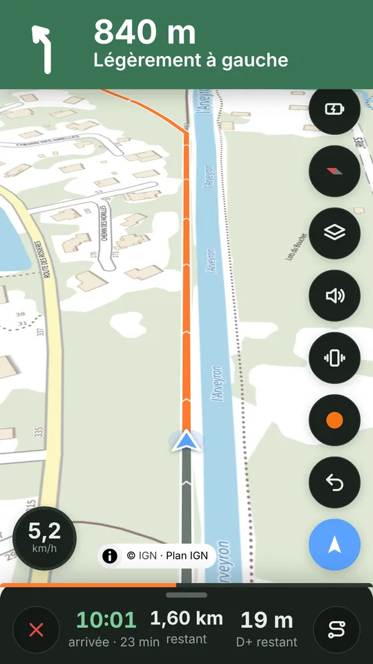
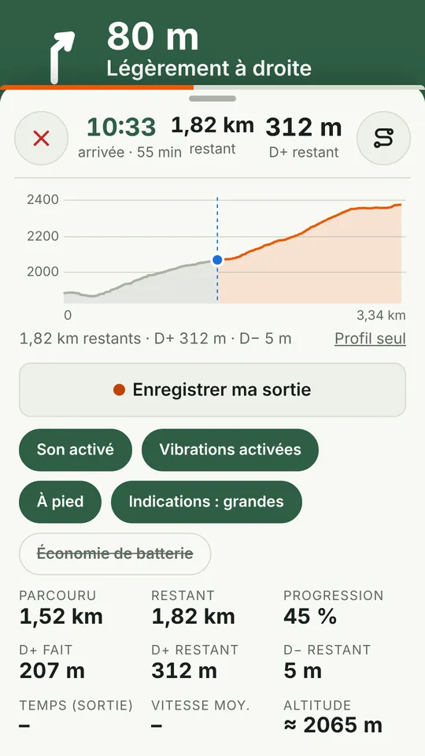
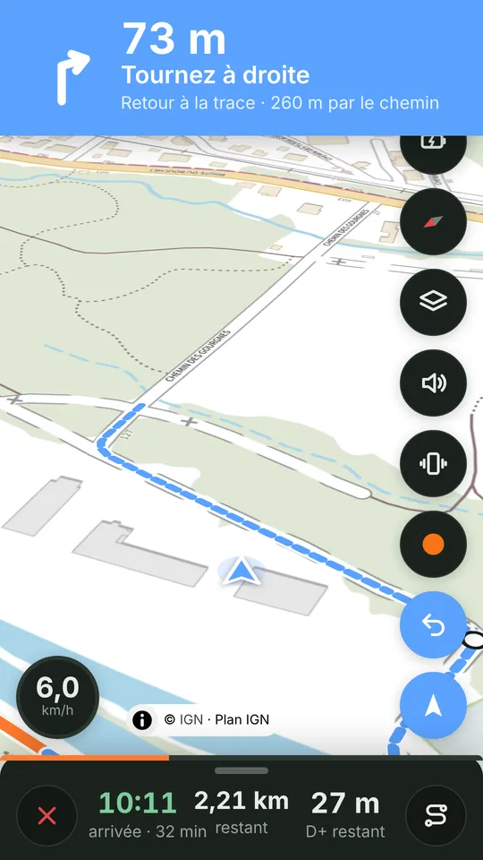
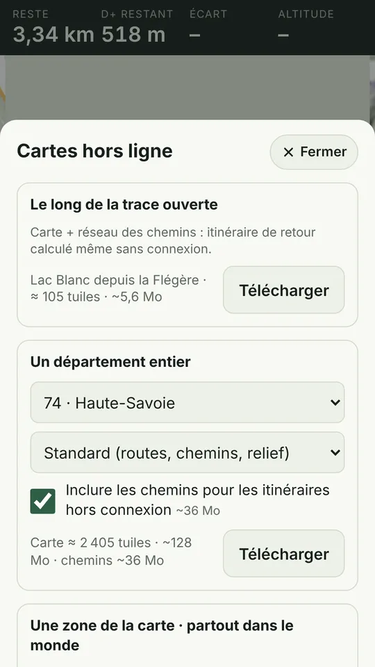
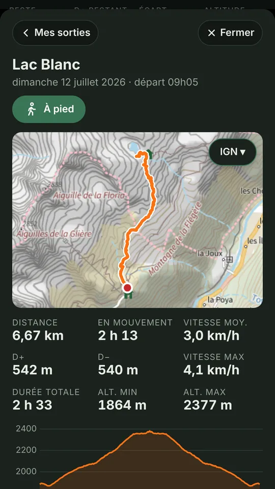
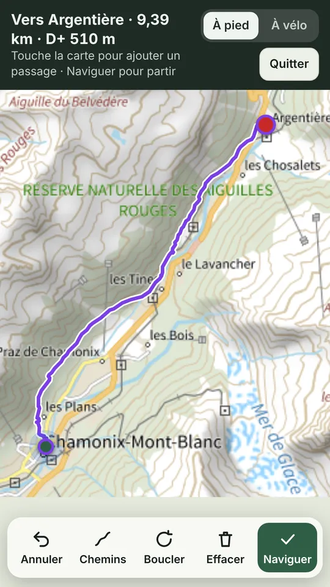
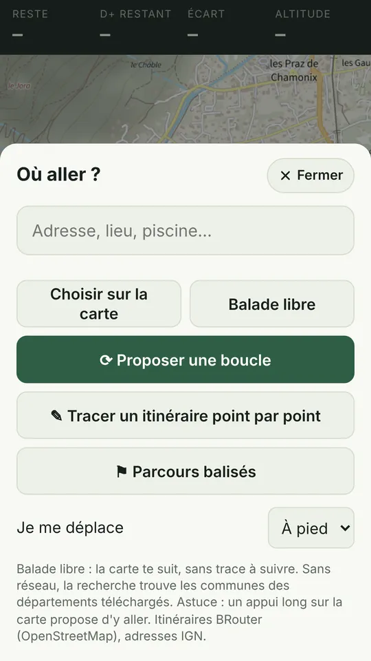
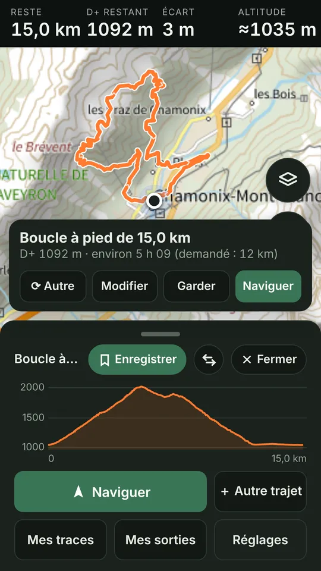

Le GPS de randonnée et de vélo simple et gratuit, avec les cartes IGN hors ligne.
Gratuit · sans compte · sans publicité · tes données restent sur ton téléphone

Pisteo fait une chose et la fait bien : t'amener au bout de ton parcours, que tu aies du réseau ou pas.
Carte orientée dans ton sens de marche, chaque virage annoncé, heure d'arrivée et D+ restant.
Tu t'écartes ? Pisteo te prévient et calcule le chemin le plus court pour revenir, par les sentiers.
Télécharge une trace, un département ou une zone du monde, avec ses chemins. Gratuitement.
Une boucle de la distance voulue, les GR et véloroutes autour de toi, ou ton tracé point par point.
Distance, temps en mouvement, dénivelé et profil. Export GPX ou envoi vers Strava.
Écran noir entre les virages, la carte revient juste avant chacun. Pour les longues journées.
Captures prises autour de Chamonix, en thème clair et sombre.







Ce que d'autres applis réservent à leurs abonnés, Pisteo l'offre à tout le monde.
| Pisteo | Applis avec abonnement | |
|---|---|---|
| Cartes hors ligne | Gratuit | Payant (de 4 à 60 € par an) |
| Carte IGN | Gratuit (Plan IGN) | Abonnement |
| Boucles automatiques | Gratuit | Abonnement |
| Compte obligatoire | Non | Oui |
| Publicité, traceurs | Aucun | Selon l'appli |
Non. Pas d'inscription, pas de publicité. Tes traces, tes sorties et ta position restent sur ton téléphone.
Oui, dans une zone téléchargée à l'avance avec ses chemins : carte, guidage, retour à la trace, itinéraires et recherche de communes fonctionnent hors connexion.
Touche « Partager » sur le fichier et choisis Pisteo, ou ouvre-le depuis « Mes traces ».
Pas encore d'appli sur l'App Store, mais Pisteo fonctionne dans Safari : ouvre la version web, puis Partager › « Sur l'écran d'accueil ».
Réglages › Sauvegarde : un fichier emporte tes sorties, traces et réglages. Sur le nouveau téléphone, « Restaurer » remet tout et propose de retélécharger tes cartes.
Un randonneur et cycliste, sur son temps libre. Une idée, un souci ? Écris à pisteo.app@gmail.com ou utilise « Donner mon avis » dans l'appli.
En attendant, Pisteo fonctionne déjà dans le navigateur de ton téléphone.